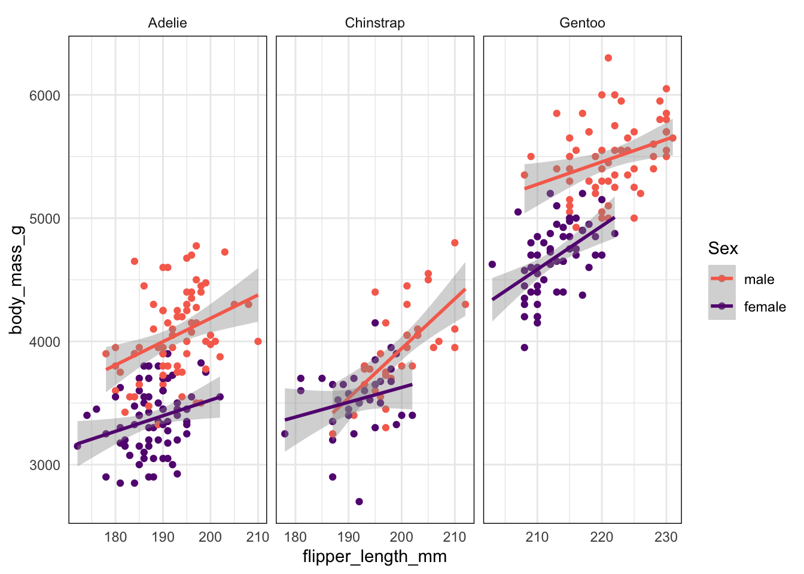

Code
# load the tidyverse, and other useful packages
pacman::p_load(flextable, palmerpenguins,
janitor, magrittr, tidyverse)
vars_measurements <- c("culmen_length_mm", "culmen_depth_mm", "flipper_length_mm", "body_mass_g")
# use pipe operative from magrittr
penguins_example <- penguins_raw %>%
# column names to snake_case using janitor package
janitor::clean_names() %>%
# rename columns using dplyr
rename(carbon = delta_13_c_o_oo,
nitrogen = delta_15_n_o_oo) %>%
# add new columns using dplyr
mutate(
# extract year using lubridate
year = lubridate::year(date_egg),
# change case in sex column using stringr
sex = str_to_lower(sex),
# take first element of species column string using stringr and purrr
species = str_split_i(species, pattern = " ", i = 1)) %>%
# remove nas in sex column using dplyr
filter(!is.na(sex))
# plot data using ggplot
ggplot(penguins_example, aes(x = flipper_length_mm, y = body_mass_g,
# reorder sex using forcats
col = fct_reorder2(sex, flipper_length_mm, body_mass_g))) +
facet_grid(cols = vars(species), scales = "free")+
geom_point()+
geom_smooth(method = lm)+
scale_colour_viridis_d(option = "magma", begin = 0.7, end = 0.3, name = "Sex")+
theme_minimal()+
theme(panel.border = element_rect(fill = NA))